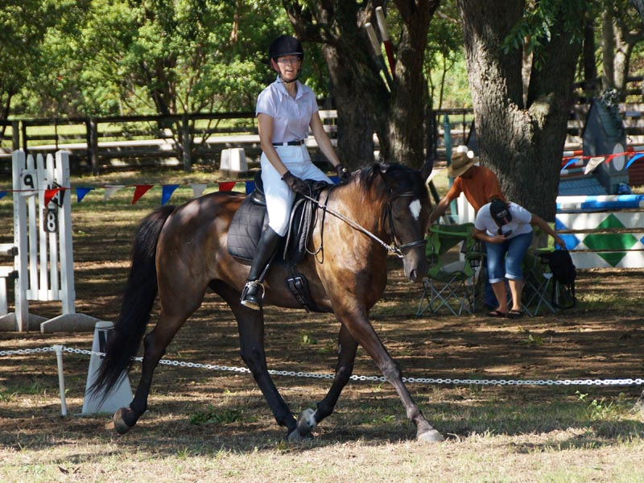

BN Combined Test at Quail Run
We saw a lot in the warm up with jumping going on, but he was relaxed and listening.
He was very steady in the ring and our right lead canter was the best it's ever been at a show.
The stadium warm up was a bit sluggish, but once in the ring he was happy to be jumping around a course.
We ended on our dressage score of 32.9 and got first place. I think it's our first blue in an event.
I had a bit of nerves the day before at cross country schooling, but my friends talked me through it
and Miaren took care of me until I was feeling more confident. We hadn't jumped since March, but he's always game.
I was a little tense in warm up but he settled pretty quickly.
We did a little gallop and lengthen in the warm up to wake him up.
I had him a little bent to the right on the entrance. My right leg typically has
too much pressure, but we're working on it.
The corners came up quicker than we expected. Our 'ring' at home isn't that well
defined some times.
My right toe is fighting to point out. Last week the judge said it was 'expressive'.
Hmm. My trainer is frequently mentioning that my right leg likes to get shorter
than my left.
A lot of trot work in this test.
I love how free he is in the trot while looking like he's got some power behind.
He wasn't completely steady in the bridle, but in the trot work he only occasionally
braced.
Crossing the diagonal again.

They were doing stadium jumping just behind the judge, but once we were in the ring
he knew where his focus should be.
A sequence of a canter transition. Here I wish I were lifting my ribs and shoulders
more. I know I'm sitting and saying 'prepare, prepare,prepare' and slightly telling
him with my seat what's about to happen.
But if I can be lighter with my upper body maybe he can learn to lift into it more
with his shoulders.
And not feel that his head needs to get into the act. It's still hit or miss whether
he'll use his head to help with the transition. I've stopped holding him and he
seems to appreciate that, but I still see a lot of canter transitions in our future.
The really encouraging thing is that the next stride he's into my hand and soft.
I, on the other hand, need to figure out how to stay light and up even in the downward
part of the canter stride. Although too light in the transition and he won't keep
it, so we need to get our comunication down also.
Up for both of us is getting better. We both still need more work going to the left.
It's not always our better direction.
I know that I was thinking about our downward coming up here.
I really wanted to push him into the transition and have my leg on so he didn't
fall into the trot. It worked well here. I was lucky I was able to think. Sometimes I just think slow down and use the reins and then our scores aren't so good.
I like that I can see my trailer in the background here.
And back across the diagonal. My trainer got on him the day before to walk back
to the trailer and was surprised at how little he wanted to round up and soften.
He's a bit conformationally challenged with a bit of an upside down neck if he has
his choice.
It took me a couple of strides to tell that he wasn't going to need a lot of work
from me and he was going to balance us.
Then I could sit up and ride it without trying to do the work for him.
For a while it was work to keep the canter going, then we had to work through getting
him to slow down. Now we're getting to the point where I can sit and look pretty.
This canter feels deliberate and balanced and like every stride is controlled. I
felt like I could talk to him every stride around the corner. Really a nice feeling.
Unfortunately I didn't remember to have my leg on in the downward because I was
enjoying the canter too much.
With only pretty much yes and no communication I'm working all the time to say yes
when he's working like this and reaching his poll (top of his head) forward and
stretching the muscles over his topline.
Turning up the center line at B. As my trainer said, it's only 5 minutes. I am capable
of keeping my posture for that long. But when I start thinking of things like the
pattern my posture slides. It's easiest when I feel like I'm really on a 'dressage'
horse
and we're working together and I can picture that 'real dressage rider'
image in my head then when I think what we need to do next it happens. Miaren and
I aren't exactly there yet. But we will be.
He lost his back foot on the halt. I don't know if it caught on something or it
just gave out a bit, but there was a bobble while he got his hind feet back. Our
only 5 on the test. Not too shabby.
This is jump 2. He landed from fence 1 and I could feel him slip a bit and then
reassess his balance for
jumping. There was a little rain the night before and he
figured out quickly that he should be a bit more careful in the footing. A nice
thing to feel him figure out.
Finally giving with my hands. We did well in stadium last year showing, but he was
sometimes a little fussy with his head and I could be a bit frozen. Last week on
Nero I could feel the difference when I did a short and long release. Even his expression
in the pictures was obvious. So I worked this weekend to consciously give forward.
Pretty much a direct release. It'll take more jumping practice to make it a habit,
though.
Here I think we were a little close and I fell back on my short release. He's stuck
with a more limited use of his head and neck, but luckily had that engine behind
to power us over.
Back to giving with my hands and look how he shows his appreciation by using that
head and neck. I think he's even using his upper lip to stretch over the fence.
Way too close and I'm sure I jumped ahead but I think I'm giving and not just propping
on my hands right in front of the saddle. At this height he's still able to get
close and not hit stuff. A little higher and it's not going to be so easy if we
miss our striding.
He pulls us to the fences.
No head tossing or head between his legs for this round. He can make it around when
I'm not giving him a good release, but he's much happier this way.
And the last two jumps not so good. I was waiting for a chip in and he knew he wasn't
going to fit another stride in easily. I was left behind but he didn't hold it against
me.
Another long spot. The jump wasn't required for the course but it was right in front
of the finish line and the optional easier way to go. I let him take it how he wanted,
but I should have been ready for the long spot since that's typically the option
he'll take if given a choice. Here I think I slipped the reins a bit and let him
go through the finish with the reins loose.